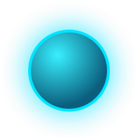

logo-title_914700ec.png

Re-running a conversion produces identical files — version control diffs stay clean, references never break.
Identical sprites across frames are baked once and shared — the Starfall sample: 405 objects, just 33 unique sprites.
A bundled FigoText material and shader keep converted text sharp inside UGUI.